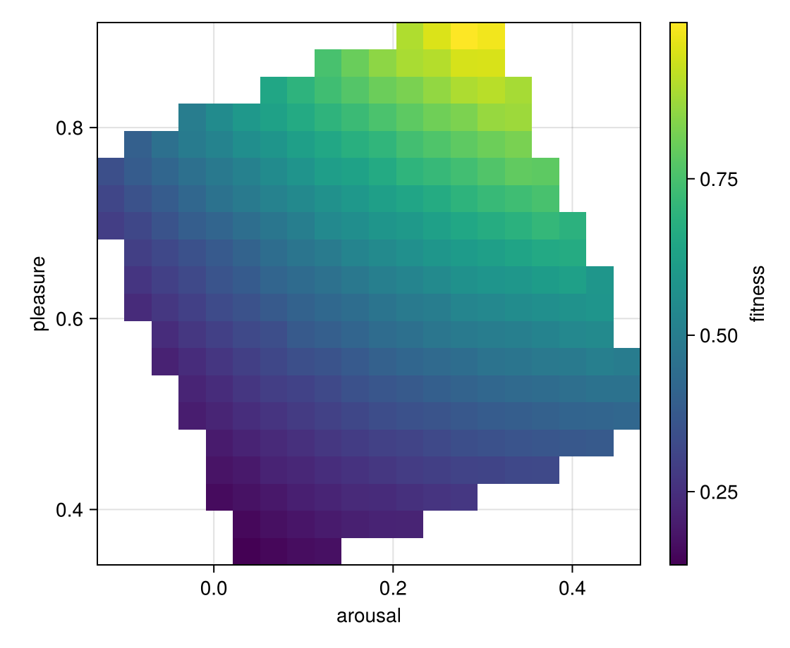
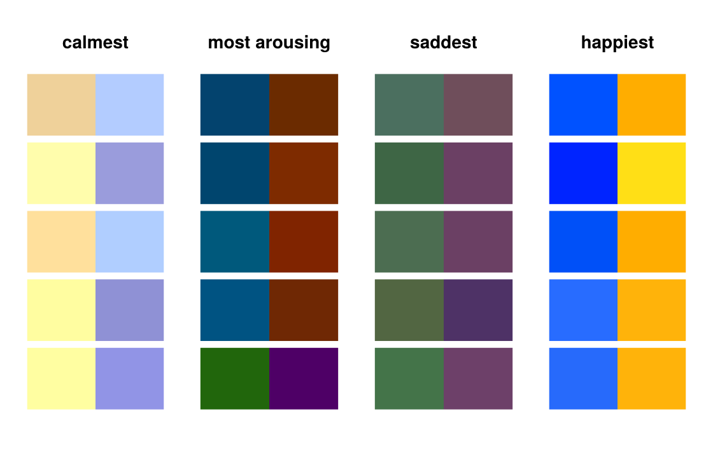

Colour pairs and emotions
Which pairs of colours look striking, and how do they feel? This example fills an archive with pairs of colours, ordered by the emotions they tend to evoke: from calm to arousing, and from sad to happy. The genotype is a pair of colours from Colors.jl, so the example follows the same steps as the graph tutorial: a problem, a variation operator, and MAPElites told about both.
Set up once, from the repository root:
julia --project=examples -e 'using Pkg; Pkg.develop(path="."); Pkg.instantiate()'Run:
julia --project=examples examples/colours.jlusing Colors: HSV
using QualityDiversity
using Random: AbstractRNG, XoshiroThe problem
A solution is a pair of colours in HSV: hue in degrees, saturation and value between 0 and 1.
const ColourPair = Tuple{HSV{Float64},HSV{Float64}}Tuple{ColorTypes.HSV{Float64}, ColorTypes.HSV{Float64}}The fitness rewards striking pairs: hues far apart on the colour wheel (180° is complementary), and both colours vivid, that is saturated and bright. It lies between 0 and 1.
hue_distance((a, b)::ColourPair) = min(abs(a.h - b.h), 360 - abs(a.h - b.h))
vividness((a, b)::ColourPair) = sqrt(a.s * a.v * b.s * b.v)
fitness(pair::ColourPair) = hue_distance(pair) / 180 * vividness(pair)fitness (generic function with 1 method)The descriptor places a pair in an emotional space. Valdez and Mehrabian (1994, "Effects of color on emotions") found that the brightness and saturation of a colour predict how arousing and how pleasant it feels:
- arousal = -0.31 brightness + 0.60 saturation,
- pleasure = 0.69 brightness + 0.22 saturation.
We take the value of HSV as the brightness and use the mean over the pair.
arousal(s, v) = -0.31 * v + 0.60 * s
pleasure(s, v) = 0.69 * v + 0.22 * s
mean_sv((a, b)::ColourPair) = ((a.s + b.s) / 2, (a.v + b.v) / 2)
score(pair::ColourPair) = (fitness(pair), (arousal(mean_sv(pair)...), pleasure(mean_sv(pair)...)))score (generic function with 1 method)Colours keep a saturation of at least 0.3 and a value of at least 0.4, so that no colour is a grey or nearly black. The bounds of the descriptor follow from those limits.
random_colour(rng::AbstractRNG) = HSV(360 * rand(rng), 0.3 + 0.7 * rand(rng), 0.4 + 0.6 * rand(rng))
random_pair(rng::AbstractRNG) = (random_colour(rng), random_colour(rng))
bounds = ((arousal(0.3, 1.0), arousal(1.0, 0.4)), (pleasure(0.3, 0.4), pleasure(1.0, 1.0)))
prob = QDProblem(score; init=random_pair, bounds)The variation operator
A child changes one of the two colours of its parent by a small random step in hue, saturation and value. The hue wraps around the colour wheel; saturation and value stay within their limits.
struct ColourMutation <: AbstractVariation end
function nudge(rng::AbstractRNG, c::HSV{Float64})
return HSV(mod(c.h + 18 * randn(rng), 360),
clamp(c.s + 0.05 * randn(rng), 0.3, 1.0),
clamp(c.v + 0.05 * randn(rng), 0.4, 1.0))
end
function QualityDiversity.vary(rng::AbstractRNG, ::ColourMutation, (a, b)::ColourPair)
return rand(rng, Bool) ? (nudge(rng, a), b) : (a, nudge(rng, b))
endRunning MAP-Elites
alg = MAPElites(prob; dims=(20, 20), batch_size=100, genotype=ColourPair, variation=ColourMutation())
result = solve(prob, alg; budget=100_000, rng=Xoshiro(1))QDResult after 100000 evaluations
archive: GridArchive with 272 of 400 cells occupied
qd_score: 128.73905752305384
coverage: 0.68
max_fitness: 0.9996836644698366
mean_fitness: 0.47330535854063915The archive
The heatmap shows the fitness of the best pair in every cell. Vivid colours are bright and saturated, which also makes them pleasant, so the fitness rises toward the top of the archive; the dark, dull pairs at the bottom cannot be vivid.
using CairoMakie
fig, ax, hm = heatmap(result.archive; figure=(size=(560, 460),),
axis=(xlabel="arousal", ylabel="pleasure", aspect=1))
Colorbar(fig[1, 2], hm; label="fitness")
fig
Calm and arousing, happy and sad
The elites at the edges of the archive show what the descriptor means. We sort the elites by arousal and by pleasure and draw the five at each end as swatches.
elites = collect(QualityDiversity.elites(result.archive))
by_arousal = sort(elites; by=((x, ev),) -> ev.descriptor[1])
by_pleasure = sort(elites; by=((x, ev),) -> ev.descriptor[2])
function swatches!(ax, elites)
for (row, (pair, ev)) in enumerate(elites)
y = length(elites) - row
poly!(ax, Rect(0, y, 1, 0.9); color=pair[1])
poly!(ax, Rect(1, y, 1, 0.9); color=pair[2])
end
hidedecorations!(ax)
hidespines!(ax)
return ax
end
fig = Figure(size=(560, 360))
for (column, (title, chosen)) in enumerate(("calmest" => by_arousal[1:5],
"most arousing" => reverse(by_arousal)[1:5],
"saddest" => by_pleasure[1:5],
"happiest" => reverse(by_pleasure)[1:5]))
swatches!(Axis(fig[1, column]; title, aspect=DataAspect()), chosen)
end
fig